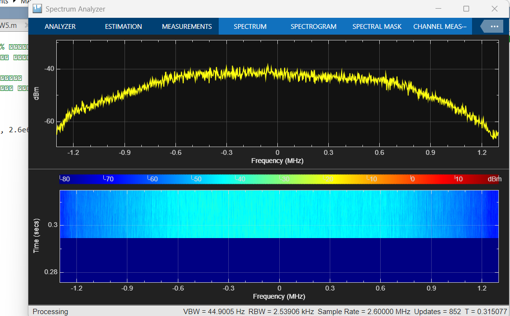

دفتر گزارشهای آزمایشگاه / نیمسال اول ۱۴۰۵–۱۴۰۶
از اولین اتصال
تا ثبت تجربهٔ آزمایش.
پیشگزارشها، تنظیمات اجرا، تصاویر جلسه و گزارشها در یک آرشیو مشترک. برای هر آزمایش، مسیر آمادگی پیش از جلسه از مستندات پس از اجرا جداست.
LAB 00 / CAPTURE ARCHIVEMATLAB

02آزمایش در آرشیو
02گزارش قابل مشاهده
PRE / POSTدو مسیر مستقل هر جلسه
17تصویر از آزمایش صفر
SEMESTER ARCHIVE
پیشگزارشها و گزارشها
تاریخ، وضعیت و فایلهای هر آزمایش
| آزمایش | عنوان | پیش از جلسه | پس از جلسه | تاریخ جلسه |
|---|---|---|---|---|
| 00 | راهاندازی محیط و نصب نرمافزارهاEnvironment and Toolchain Setup | پیشگزارش جداگانه موجود نیستثبت نشده | گزارش ←زمان تحویل در فرم درس ثبت نشده | در مدارک جلسه ثبت نشده |
| 01 | پیشگزارش آزمایش اول | پیشگزارش ←ثبت نشده | گزارش ارائه نشدهثبت نشده | ثبت نشده |
FROM PREPARATION TO REVIEW
روند ثبت هر آزمایش
01
پیش از جلسه
هدف، مبانی، پرسشها و محاسبات آمادگی.
02
هنگام اجرا
تنظیمات واقعی، دادهٔ خام و یادداشت خطاها.
03
پس از جلسه
گزارش، فایلها و تحلیل اعضای گروه.
04
داوری همتا
پرسش و بازخورد فنی در صفحهٔ همان گزارش.
آزمایش صفر
یک دستگاه، چهار مسیر نرمافزاری
روشهای مندرج در دستورکار و تنظیمات قابلخواندن از تصاویر جلسه در گزارش ثبت شدهاند. نبود اطلاعات نیز صریح نوشته شده است.
جدول وضعیت مدارک ←THE TEAM
گروه آزمایشگاه SDR
دکتر سید محمد کرباسی
| عضو | نام و نام خانوادگی | شمارهٔ دانشجویی |
|---|---|---|
| عضو ۱ | سروش مومنی | 402102538 |
| عضو ۲ | مهدی قلمی نوبر | 402102284 |